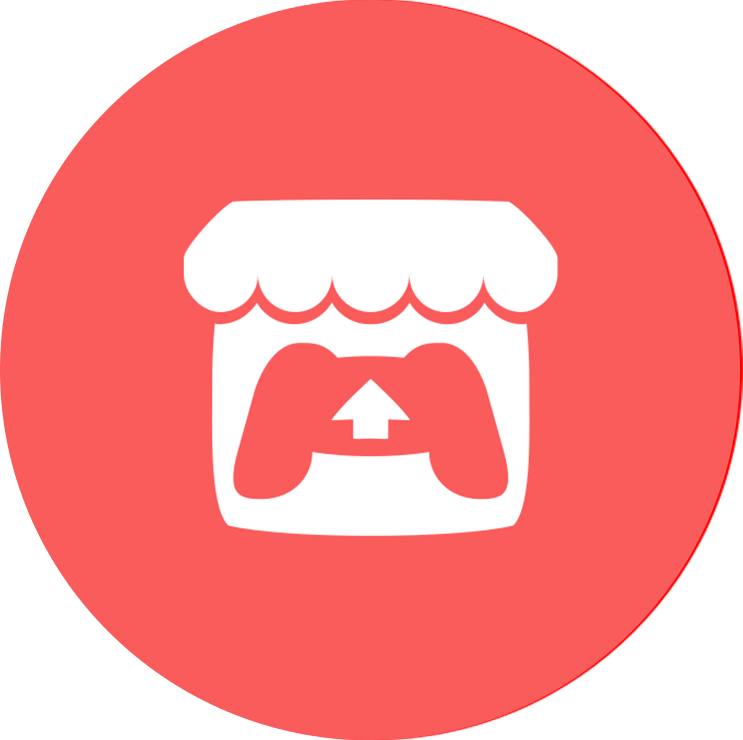
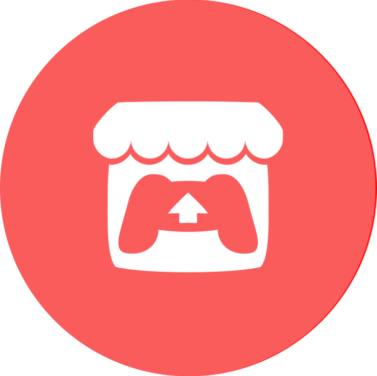

Hello, I'm Otto-Pekka. I'm a game developer student studying programming in KAMK.
You can find more about the projects I've worked on down below. Feel free to
contact me through my Email or my LinkedIn.
Email:
taskinen.ottopekka12@gmail.com
LinkedIn: Otto-Pekka Taskinen in LinkedIn
I'm a third year student learning game development in KAMK. Before coming to Kajaani I graduated from the High School of Nilsiä.
I Have been fascinated about video games for as long as I can remember. I started game development as a small hobby back in college and
then I wanted it to be my future.
I'm interested in multiple aspects in game development, especially programming, art, and UI/UX design.
I'm ready to learn new skills and try to perfect them to add to my collection of proficiencies.
On my freetime I usually play video games alone or with friends. My favorite games of all time are Team Fortress 2, Minecraft, and Terraria. From time to time I also work on small projects to hone my programming and art skills.
Oh and can't forget about music. Having played piano for more than 5 years, music has a very special place in my hearth and I listen to plethora of different genres depending on mood.
During my time here at KAMK, I have been in the roles of a team lead, artist, game designer, programmer, UI designer/artist on the game project courses.
In addition to that I have worked as the QA-Manager for Kajak Games since the January of 2021.
Language proficiency:
- Finnish, native language
- English, fluent
Programming languages:
- C#, Proficient
- C++, Proficient
- Python, Familiar
- GLSL, Novice
Other technical skills:
- Unity
- Unreal Engine 4 and 5
- Godot game engine
- Graphic design:
- UI/UX
- Photoshop
- Clip Studio Paint
- Figma
- Video editing in VEGAS Pro 16
- Basic understanding of music theory
- Audacity
In Temp-o-maniac, I initially was the team lead and
a programmer. Later down the line the team got a producer who then took the role of team lead. I worked on the UI/UX design, enemy AI, game sounds and
created some technical art in form of a glitch shader.
In RoboBastion, I was the game designer and a programmer.
I worked on the UI/UX design, wave design, item design and did some smaller programming tasks like adding items and such to the game.
Monster Game was a solo project I worked on.
The game was done in C++ utilising both SFML and SQL databases.
Unnamed FPS game was done for summer game development course as a solo project.
The game was done in Unreal Engine 5 utilising both C++ and Blueprints.
Demo reel of particle effects done for a VFX course.
Effects were done in Unreal Engine 4.27 using Niagara with custom textures.
Link to youtube if embedded video isn't working: Effect demo reel